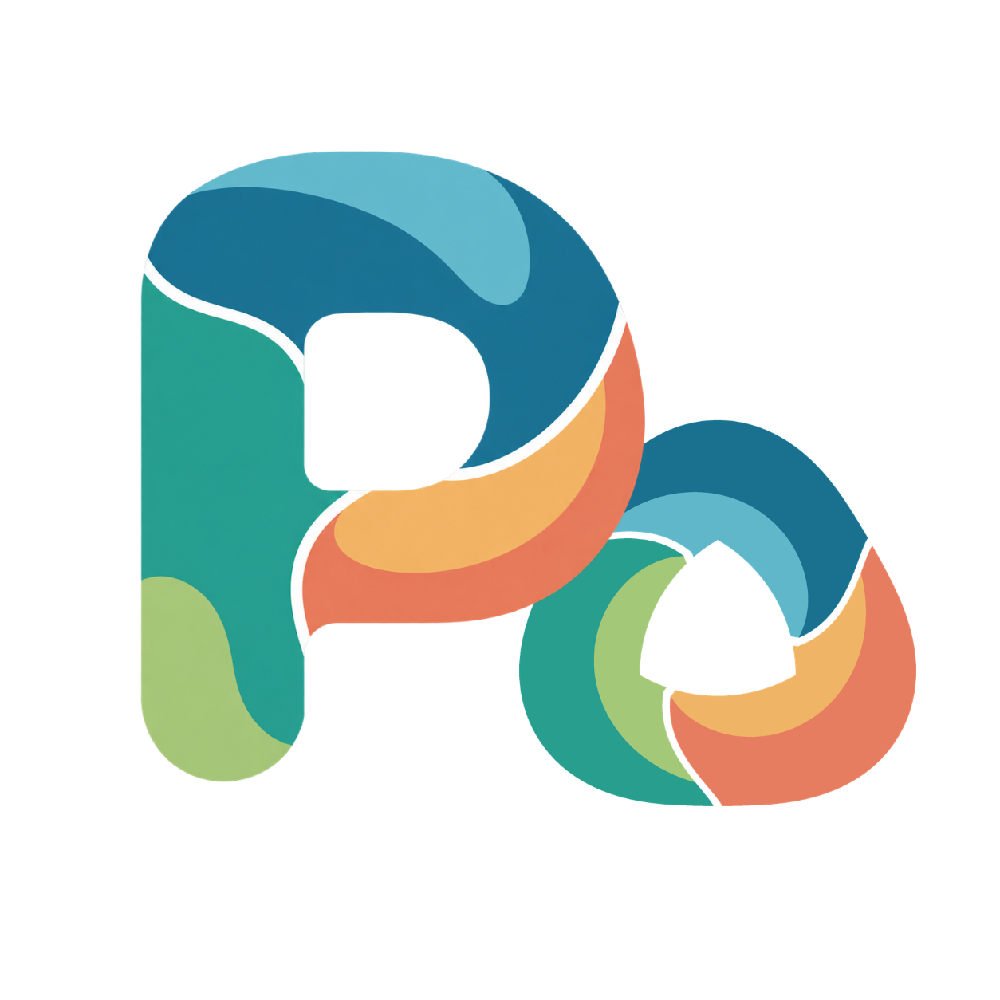
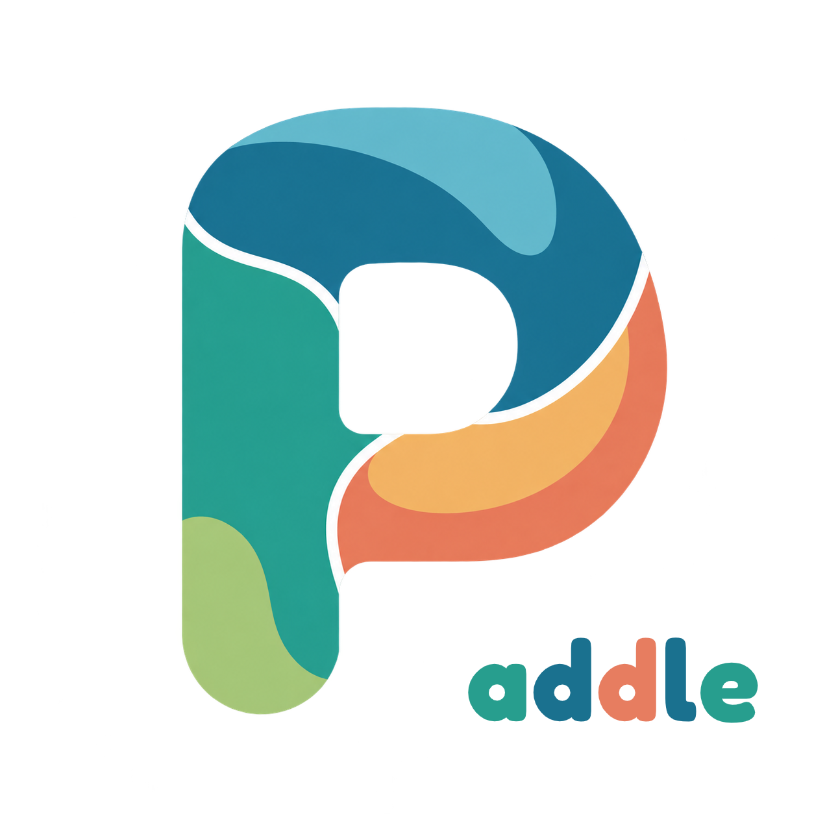
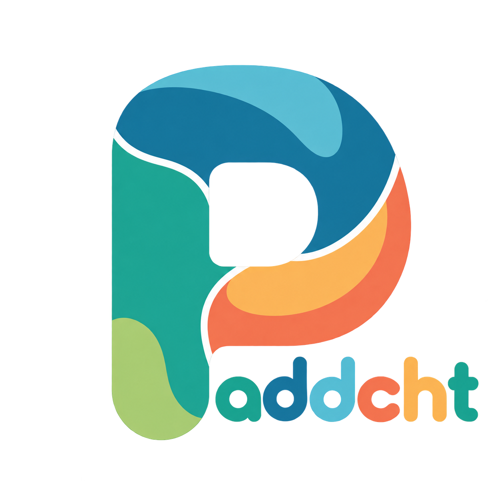
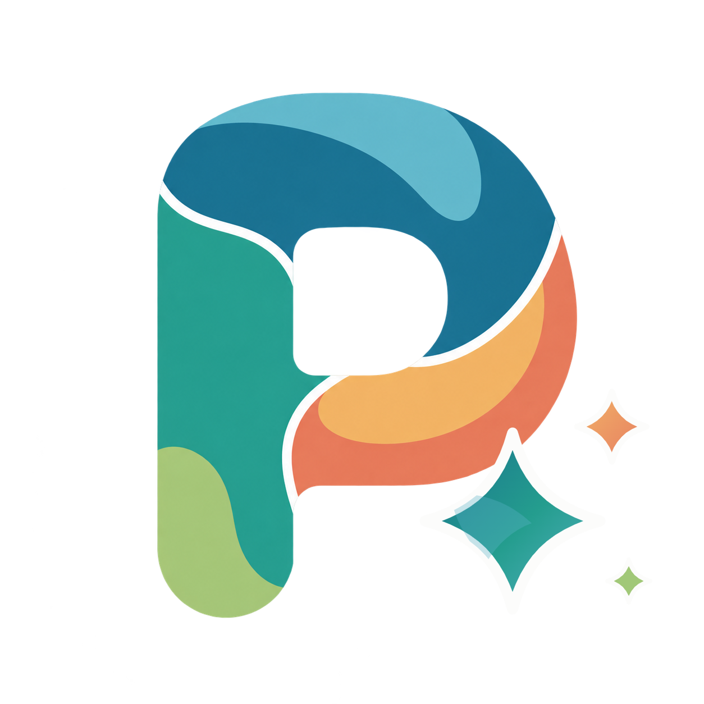

网站、Android 客户端和清晰的用户流程，让产品能被理解和使用。
Paddi / Ecosystem
Paddi Ecosystem
把移动产品、网站、服务端和公开交付入口放在同一张地图上。每条产品线都从真实需求出发，经过架构、开发、部署和持续迭代。

01 / PRODUCT LINES
正在构建的产品线
4 个方向 · 同一套设计与交付语言
PUBLIC PRODUCT01

Paddle
面向学习场景的 Android 错题整理应用，覆盖拍照收集、扫描处理、预览与导出。
打开公开产品页 ↗ PUBLIC SERVICE02

Paddcht / Paddi Chat
好友、媒体和实时互动的 Android 产品与服务端，强调关系与隐私边界。
打开产品官网 ↗ PUBLIC SERVICE03
Paddi Account
独立账号与授权入口，为生态产品提供统一的身份与访问边界。
打开账号入口 ↗ TESTING04

PaddLem
面向 AI 对话、资料查找和小窗交互的产品方向，通过生态官网提供测试入口。
查看测试入口 ↗02 / SYSTEM MAP
从想法到可用产品
产品经理视角的顶层架构
账号、API、数据与权限边界，把多个产品连接成可维护的系统。
部署、域名、版本、验收和回滚，让每次发布都能被验证。
公开站点清单
查看当前能打开的个人主页、产品页和服务入口。
浏览站点 → 04 / OPEN SOURCE公开源码与实验
棋类项目、Android 应用、AI 平台和机器学习实验。
查看作品集 →